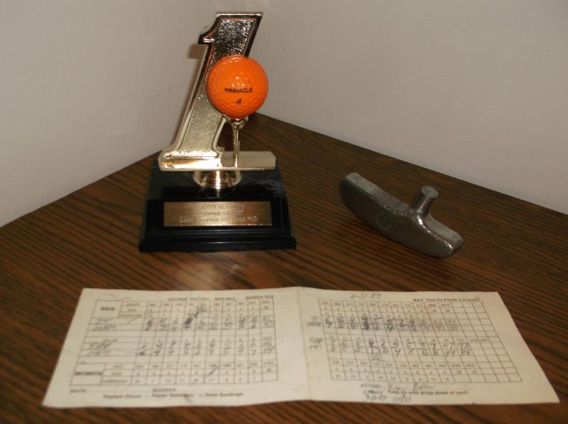

Martin Manley: My Life and Death
Born 8-15-53, Died 8-15-13 , Age 60
- Home Page
- January 1, 2012
- June 11, 2012
- Suicide Preface
- Why Suicide?
- Why not?
- Why Age 60?
- Self-Serving?
- Suicide - How 2
- Gun Control
- Other Suicides
- Other Quotes
- ------------------------------------
- Growing Up
- OMG: I look 60!
- Mom and Dad
- The Heavens
- My Religion
- Chancel Choir
- Victory O Lord
- The Proposal
- Two Marriages
- First Two Loves
- Pictures
- Trips and Travel
- Writing Fiction
- Music & Poetry
- Movies & TV
- Health
- Sleep Deprived
- Living Donor
- Food & Drink
- Creations
- Sports
- KC Star
- KC Tornado
- My IQ
- Synesthesia
- Poker
- Legal
- JOCO, Ks.
- U.S. Financial
- 911 & Conspiracies
- COOL STUFF
- Births & Deaths
My best and worst
WORST:
At the age of 11, our family moved from Topeka to western Kansas. This was in 1965. At the time, I didn’t realize we were going the wrong direction, but when the truck carrying our stuff kept having flat tires, that should have been an omen. My parents didn’t heed it, but as soon as high school ended, I made certain to rectify that mistake by leaving and never returning except to visit – and even then, never more than 24 hours!
In any event, we ended up in the country – truly in the middle of nowhere. We took a bus to a podunk school – one of those that had K-12 in attached buildings in a little town of about 450 people called Pawnee Rock, Kansas. The only positive about the place was that it had fairly good sports facilities. Many league and regional events were held at either the gym or the football/track field. It is only because of that fact that this story exists.
I was in junior high – which meant 7th and 8th grade. A junior high league track meet was scheduled that afternoon at our school. During lunch, the coach/Spanish teacher/lunch room monitor came up to me and said he wanted me to participate in the pole vault.... Say what? Keep in mind that I wasn't even on the track team and I had never touched a pole or even a vault. I barely knew what a pole vault was. I even thought it was spelled poll volt!
Anyway, I knew he was out of his mind and I couldn’t comprehend why I was being asked to do it. But, when you are in the 8th grade, you stupidly do what you are told without asking very many questions.
I discovered that you don't just "participate" in the pole vault. You participate in the 100-yard dash... maybe. You participate in the long jump... maybe. But, you don't "participate" in the pole vault! Anyone can throw a discus or jump a hurdle, but you have to know how to vault a pole. I might as well have been asked to participate in putting a man on the moon!
Nevertheless, our junior high had easily the best vaulter in the league – even better than anyone in the high school (Bruce). So, my coach sent him outside with me to practice before the opposing teams started showing up. The first attempt was a disaster. On my second try, I actually cleared the starting height of eight feet, except I forgot to let go of the pole and knocked the bar off....
...."Good enough" said my so-called teammate. “Good enough? Are you joking me?” Again, I thought he was just as nuts as the coach, but when you're 13, you just do what you’re told – unlike today’s kids who (for better or worse) challenge everything. If only I could turn back the clock!
So, a couple hours later my turn in the event came. I ran down the corridor thingy and stuck the pole thingy into the hole thingy and vaulted myself into space...
--------------------------------------------------
That day and that event represent the highlight of my track and field career. Although, I knew absolutely nothing and had absolutely no training just a couple hours earlier, I placed (meaning top-5) and added to our team’s points. I could end the story here – one of grit and determination – obedience and success, the fastest learner in history… however…
--------------------------------------------------
… it didn’t take long to discover I wasn’t Sergei Bubka. Upon the completion of my first attempt, I found myself flat on my back, lying on top of the cross bar just in front of the padding - bruised and embarrassed. But, that was hardly the worst of it. I had broken the crossbar.
The high school guys, who were managing the event, were highly agitated with me and relentlessly abused me verbally – bastards! It seems the crossbar was brand new for the meet... the high school meet later that night. Needless to say, I made no more attempts. I sat on the sidelines and cried my eyes out. Actually, I’m not sure who is the biggest bastard – the coach, the high school bullies, my teammate, the school, the city of Pawnee Rock or everything west of Topeka! Resentment? Me?
I should point out that, to this day, despite the shame and ridicule that I endured, I proudly display the only track and field ribbon (5th place) that I ever received in my life! Yep, it seems only four vaulters had entered the event and they gave points for the top-5. The Pawnee Rock “coach” traded on that inside information. After all, from his point of view, what's a lifetime of embarrassment for an 8th grader compared to one more point in a podunk middle school track meet that you won by 50 points anyway?
And, now you know… the rest of the story.
BEST:
As good as my best moment was, it doesn’t compensate for my worst moment, so I’m still a net negative. Even so, I remember my best moment more often because I have something really cool to remember it by and it sat on a shelf in my office for many years.
A friend of mine (Kipp) and I went out to play golf one day in September of 1987. Now, you have to understand that I suck at golf and I always sucked at golf. The best I ever shot was around 84 and there was surely some cheating in there somewhere. Plus, I remember making about five long putts – most of which were once in a lifetime.
Using semi-strict rules on an easy course, I would probably average about a 95-100. I didn’t play all that often – once every couple weeks. I didn’t take lessons. I was a hacker in the true sense of the word.
September 13, 1987, 4PM, teeing off on hole #13 at Lake Shawnee Golf course in Topeka, Kansas. The hole faces straight west – directly into the sun at 4PM. 127 yards. I’m a pathetic striker, so I’m using a 6-iron. I swing…
----------------------------------------
I gave up the game of golf shortly thereafter. One time I threw my entire bag of clubs into the pond on #18 on the same course. I was walking away to leave them as a permanent playground for the fish when I remembered my keys and billfold were also submerged. I had to wade in to get them. That was enough time to calm down. I brought the clubs back to dry land and continued to "play".
Some months later I hit a ball so bad off the tee that I took my bag full of clubs and jumped up and down on them about 20 times. It was a par 3 and the rest of the guys were on the green by the time I showed up. All I had in my hand was the handle of the cart. Once again, I realized that I was not prepared for my frustration. My prescription glasses had been in the bag. When I went back to retrieve them, they were destroyed.
I decided right then and there on that day that I would never play golf again. Too time-consuming, too frustrating, too expensive, too slow, too hot or too cold or too windy… too, too, too. Too many too's. I had just bought a set of Ping clubs but fortunately wasn't using them that last day. So, I gave those away and never again set foot on a golf course. I’m not sure who is better off – me or the courses I would have defiled.
Some people are cut out for ping pong, some people are cut out for ping golf. I was darn good at ping pong!
----------------------------------------
The ball headed straight for the pin, but it was directly into the sun and neither Kipp nor I could see where it landed. The green on #13 at Lake Shawnee is at the exact level of the fairway. No rise at all. However, at the back of the green, it drops off to a steep hill. You do not want to overshoot. That’s why I used the 6-iron. Had I used the 5-iron on a 127 yards, I would have hit it through the green. Of course, a pro would have gone easy on a pitching wedge.
We were in a cart and drove up to the green looking for the ball all the way. It was a Pinnacle 4 (orange), so it should have been easy to spot. It wasn’t in front of the green and it wasn’t on the green. So, naturally, we walked to the back and started looking around the hill. We looked for several minutes and felt we should have been able to find it. The grass was all neatly mowed.
Finally, we looked at each other and shrugged. We walked up the hill, across the green and looked in the hole. There it was. A hole in one.

I thought it would be appropriate to take a picture of the golf ball I hit for a hole in one, but show it along with the head of a putter. It was one of the pieces I bothered to pick up after my last game of golf when I destroyed my clubs.
Being responsible for the Daily Data page five days a week at the Kansas City Star for years, I saw lots of holes in one come through. And, you have to figure there are probably lots more that don’t get called in. So, it isn’t exactly rare. However, when you stop and think about all the holes that are played on any given day at all the courses in metro KC, and you think about how many really good golfers there are out there aiming for the flag on par 3’s, it’s pretty remarkable for me to have hit one – especially for no more than I played. But what probably is rare is hitting an ace that you never saw go in the cup.
Now, for a little insight into the inner workings of Martin Manley’s brain.
Here is how I think. 13, 1, 13
It was the 13th day of the month that I hit a hole in 1 on hole #13. My initials MAM are the 13th, 1st and 13th letters in the alphabet. Since the distance of the shot was 127 yards, I looked up page #127 in my first Basketball Heaven book that I had just received the copy of a week earlier. On page 127, I had listed the greatest jersey numbers in NBA history (up to that point in 1987). The 13th best-ever rated jersey number was also worn by the #1 statistical player ever (Chamberlain). His jersey number? 13, of course!
If hitting a hole in one wasn’t memorable enough, I converted it to a language my memory could absorb. Because of that association, I never forgot the details, even though I never even saw it happen.
-----------------------------------------
For years, I used to brag about how none of my friends that play a lot of golf had ever hit a hole in one - suckers!
Not long ago, one of my poker buddies (Joe) informed me he had aced a par 3. He plays a number of different courses, but it just so happens he was at Lake Shawnee in Topeka – the same course on which I hit mine. The other par 3 on the back nine is #17. Unlike #13, you have no chance to see it go in because the green is elevated over a pond – the same pond I threw my clubs in on #18.
He hit it, went up to find it, couldn’t see it anywhere and ultimately looked in the cup. Just as I had done, that was the first he knew he had accomplished the ultimate on a golf course.
So, the cool factoid is that I’m not the only one of my poker group who hit an ace they didn't see – not even on the that course or the that back nine. The downside is that I’m not the only one of my poker group who hit an ace.
Copyright 2013 Martin Manley Life and Death. All rights reserved.